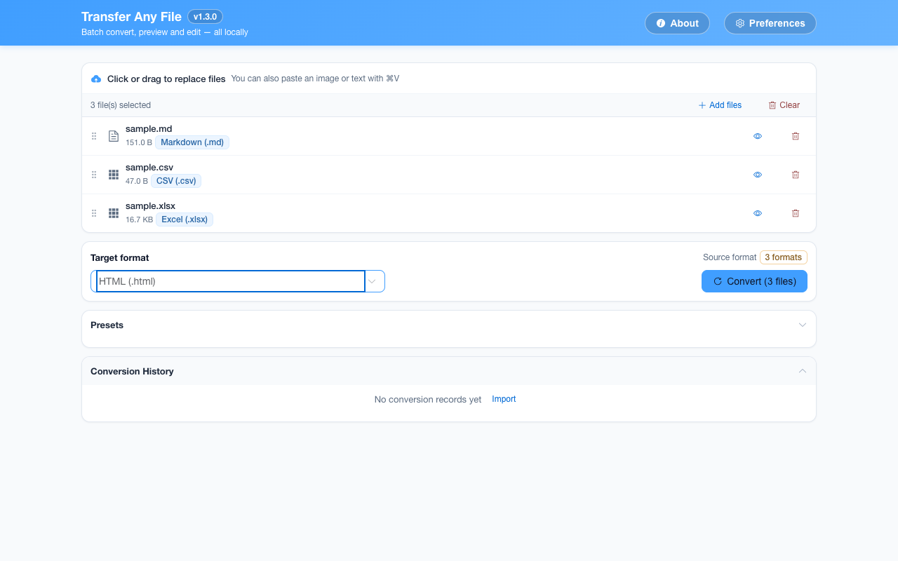

离线 · 无上传 · 浏览器本地完成Offline · no uploads · runs in the browser
Excel 转换：全部可用目标Excel conversions: every available target
Excel 文件不只是一张表：它有多个工作表、公式、日期格式与显示规则。这份工具在数据类路线上坚持「值优先」——日期与数字先恢复成存储值，再序列化；在文档与图片路线上则把每个工作表摊成一张带标题的表格。公式本身不保留，留下的是它算出来的值。An Excel file is more than a sheet: it has several worksheets, formulas, date formats and display rules. On data routes this tool insists on values — dates and numbers are restored before serialisation — while document and image routes lay every worksheet out as a titled table. Formulas do not survive; the value they produced does.

全部可用目标Every available target
-
MarkdownMarkdown 2 步2 steps
Excel (.xlsx)Excel (.xlsx) HTMLHTML MarkdownMarkdown
把工作簿写成管道表：每个工作表一张表并冠一行小标题，日期按 ISO 文本落地，合并区与样式按纯文本的规矩取舍。批量、可预览、零网络请求。A workbook becomes pipe tables — one per worksheet under its own heading, dates as ISO text, merges handled as plain text allows. Batch and fully offline.
-
HTMLHTML 1 步1 step
Excel (.xlsx)Excel (.xlsx) HTMLHTML
在浏览器里把 .xlsx 变成独立 HTML：每个工作表一张表并带表名标题，日期落成文本，产物不含脚本。Turn .xlsx into a standalone HTML page in your browser: one table per sheet with a heading, dates as text, and no scripts in the output.
-
Word (.docx)Word (.docx) 2 步2 steps
Excel (.xlsx)Excel (.xlsx) HTMLHTML Word (.docx)Word (.docx)
在工作台里把 .xlsx 转成 .docx：每个工作表写成一张 Word 表格，多表时带上表名标题。值保真、可编辑，全程离线。Each worksheet becomes an editable Word table, named when there is more than one. Values are kept; styling is not. Offline, in your browser.
-
PDFPDF 2 步2 steps
Excel (.xlsx)Excel (.xlsx) HTMLHTML PDFPDF
这条是多步链：SheetJS 先把每个工作表写成带表名的 HTML 表格，再由它生成 A4 竖版 PDF；中间产物只在内存里。日期不会被读成一串数字，公式值取上次保存时缓存的结果。全程离线。SheetJS writes each worksheet as an HTML table under its name, which becomes a portrait A4 PDF, intermediate held in memory. Formula cells keep cached values.
-
CSVCSV 1 步1 step
Excel (.xlsx)Excel (.xlsx) CSVCSV
浏览器本地把 .xlsx 转成 CSV：按单元格值序列化，日期统一格式，带 UTF-8 BOM，公式注入被转义。多 sheet 每表一份 CSV 装进 ZIP。Convert .xlsx to CSV in your browser from cell values, not display text: dates normalised, UTF-8 BOM, formula injection escaped, one CSV per sheet in a ZIP.
-
纯文本 (TXT)plain text (TXT) 2 步2 steps
Excel (.xlsx)Excel (.xlsx) HTMLHTML 纯文本 (TXT)plain text (TXT)
在浏览器里把 .xlsx 读成纯文本：按工作表顺序逐行取单元格文本，同行以制表符分隔；日期归一，空单元格留空。Cell text in worksheet order, tabs between cells in a row and a newline between rows. Dates normalised, empty cells left empty.
-
JSONJSON 1 步1 step
Excel (.xlsx)Excel (.xlsx) JSONJSON
浏览器本地把 .xlsx 转成 JSON：单表给行对象数组，多表按工作表名分组；数字与布尔是真类型，日期是两段式 ISO 文本。Convert .xlsx to JSON locally: one sheet becomes an array of row objects, several are keyed by sheet name. Numbers and booleans stay typed, dates are ISO text.
-
PNGPNG 2 步2 steps
Excel (.xlsx)Excel (.xlsx) HTMLHTML PNGPNG
每个工作表渲染成带表名小标题的表格，整叠堆成一张无损 PNG；高度超过 32768 px 报错而不是截断，长簿子的像素密度会降档。Each worksheet renders as a titled table and the stack is captured losslessly in one PNG; past 32768 px it fails, and long workbooks drop a density step.
-
JPEGJPEG 3 步3 steps
Excel (.xlsx)Excel (.xlsx) HTMLHTML PDFPDF JPEGJPEG
三步：工作表出 HTML，浏览器按 A4 渲染成 PNG 切片写进 PDF，再逐页画白底编码成 JPEG。读的是算完的值，不重算公式。全程离线。Three steps: sheets to HTML, an A4 render into PNG slices inside a PDF, then each slice onto white and encoded as JPEG. Computed values, never re-evaluated.
-
WebPWebP 3 步3 steps
Excel (.xlsx)Excel (.xlsx) HTMLHTML PDFPDF WebPWebP
三步：工作表出 HTML、按 A4 渲染成无损 PNG 切片写进 PDF，再逐页画白底编码 WebP。多张表各带标题，值不重算。全程离线。Three steps via a PDF: sheets to HTML, A4 pages as lossless PNG slices, then one WebP encode per page. Sheet titles survive; values are not re-evaluated.
这个来源格式的共同限制What holds for every target from this source
- 公式按计算结果导出，公式文本、命名区域与宏不保留Formulas export their computed result; formula text, named ranges and macros do not survive
- 单元格颜色、条件格式、列宽、图表、批注与冻结窗格不属于数据模型，在每条路线上都会丢失Cell colours, conditional formatting, column widths, charts, comments and frozen panes are not part of the data model and are lost on every route
- 多工作表在 CSV / JSON 路线上按表名分组；单表目标可能得到一个 ZIP 或多节结构，取决于目标格式Several worksheets are grouped by sheet name on CSV and JSON routes; single-table targets become a ZIP or a multi-section structure that fits the target
- 日期先按工作簿的显示格式规范化，避免把日期序列号直接写进结果Dates are normalised from the workbook’s display format first, so a serial number is not written into the result
常见问题Questions people actually ask
公式会变成值还是保留公式？Do formulas become values or stay formulas?
变成值。读取时公式单元格给出缓存的计算结果，输出里没有公式文本，也没有重算能力。需要保留公式的工作簿请留在 Excel 里。They become values. Formula cells expose their cached result when read, and the output carries neither formula text nor a calculation engine. A workbook that must keep its formulas belongs in Excel.
多个工作表会怎样输出？What happens to several worksheets?
转 HTML、PDF 与图片时，每个工作表变成一个带表名标题的表格，按工作簿顺序排列；转 JSON 时按表名分组；转 CSV 时多表结果打成 ZIP，每表一份。For HTML, PDF and images each worksheet becomes a titled table in workbook order. JSON groups by sheet name, and CSV delivers a ZIP with one file per sheet.
日期为什么不是原始序列号？Why is a date not the raw serial number?
Excel 把日期存成数字，直接导出会得到 45296 这类值。读取时按工作簿的日期格式识别并规范化，输出的 CSV / HTML / JSON 里是日期文本，而不是看起来像数字的序列。Excel stores dates as numbers, and a raw export would hand back something like 45296. The reader recognises and normalises them from the workbook’s date format, so CSV / HTML / JSON carry date text rather than a number that merely looks numeric.
转出来的表能反向转回 Excel 吗？Can the result be converted back into Excel?
CSV 与 JSON 都能作为源格式转回 .xlsx，按值而不是显示文本恢复；但颜色、公式、图表与批注不会因为往返而回来——它们从一开始就没有进入数据模型。CSV and JSON can both be converted back into .xlsx, restored from values rather than display text. Colours, formulas, charts and comments do not return in the round trip — they never entered the data model.
不需要账号，也不需要联网：装好扩展后点图标，在新标签页里打开工作台，文件从磁盘直接选。No account and no network: install the extension, click its icon, and the workbench opens in a new tab reading straight off your disk.
从 Chrome 应用商店安装Install from the Chrome Web Store 安装步骤Install steps GitHub 源码Source on GitHub
最后更新 2026-10-21Last updated: 2026-10-21